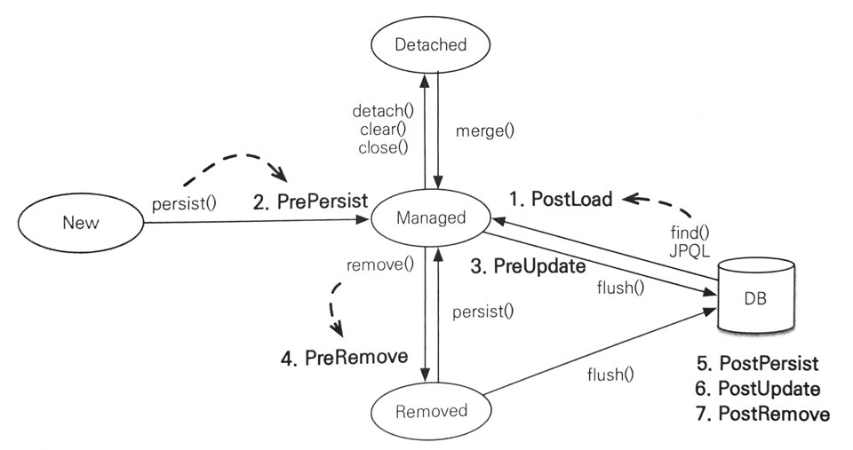

14. 컬렉션
14.1.1 JPA 와 컬렉션
- 하이버네이트는 엔티티를 영속 상태로 만들 때 컬렉션 필드를 하이버네이트의 컬렉션 으로 감싸서 사용한다.
PersistentBag은 원본 컬렉션을 감싸고 있어 래퍼 컬렉션이라고도 한다.PersistentBag, PersistentSet, PersistentList가 존재한다.
14.1.2 Collection, List
persitenBag을 컬렉션 래퍼로 사용한다.- Collection은 중복 저장을 허용하기 때문에 엔티티가 추가될 때 중복 엔터티 존재 여부를 확인 하지 않아도 된다.
그렇기 떄문에 엔티티를 추가해도 지연로딩된 컬렉션을 초기화 하지 않는다. - java List 는 순서를 저장 하지만
persitentBag은 저장하않는다.
14.1.2 Set
PersistentSet을 컬렉션 래퍼로 사용한다.- HashSet 은 중복을 허용하지 않으므로 객체를 추가할 때마다 equals(), hashCode() 를 사용해 중복을 확인 한다.
- Set 은 중복 엔티티를 조회 해야하므로 엔티티 추가 시에 지연 로딩된 컬렉션을 초기화 한다.
14.1.4 List+ @OrderColumn
PersistentList를 사용한다.@OrderColumn이 존재하는 List 컬렉션은 데이터베이스에 순서 값을 저장해서 조회한다.
@OneToMany(mappyedBy= "board")
@OrderColumn(name ="position")
private List<Comment> comments = new ArrayList<Comment>();- 데이터베이스에 순서 값도 함께 관리한다.
- 1:n 관계에서 n 에 해당하는 테이블에 position 칼럼이 저장된다.
OrderColmn 단점
- 1:n 관계에서 n에서 위치 값을 저장하지만 jpa 코드 상에서는 1 인 엔티티에서 관리한다.
- 이러한 차이로 n 인 엔티티만
insert할 때 위치 값을 넣어줄 수 없다. - list 는 삭제 시에 다른 엘리먼트들의 index 또한 변한다. 이를 DB 에도 반영하기 위해
update쿼리가 필요하다. - Position 값이 없으면 List에 null 이 보관된다.
14.1.5 @OrderBy
Order By절을 사용하여 컬렉션을 정렬한다.
14.2 @Converter
- 엔티티 데이터를 변환해서 데이터베이스에 저장할 수 있다.
@Converter
public class BooleanToYNConverter implements AttributeConverter<Boolean,String> {
@Override
public String convertToDatabaseColumn(Boolean attribute) {
return attribute!=null && attribute ? "Y" : "N";
}
// DB 저장 시에
@Override
public Boolean convertToEntityAttribute(String dbData) {
return "Y".equals(dbData);
}
// DB에서 조회 시에- Entity 의 클래스 레벨과 필드 레벨에
@Convert로 적용가능하다. @Converter(autoApply =true)로 모든 Boolean 타입에 컨버터를 적용할 수 있다.
14.3 리스너
- JPA 리스너는 엔티티의 생명주기에 따른 이벤트를 처리할 수 있다.
14.3.1 이벤트 종류

-
Event 실행 전
-
@PrePersist: persist() 호출 후 엔티티가 영속화 되기 직전, 새로운 인스턴스 merge() 시 -
@PreUpdate: flush 나 commit 을 호출해 엔티티를 DB에서 수정하기 직전 -
@PreRemove: remove() 호출로 영속성 컨텍스트에서 엔티티가 삭제되기 직전, orphanRemoval 에 대해선 flush나 commit 시에 호출 -
Event 실행 이후.
-
@PostPersist: flush 나 commit으로 엔티티를 DB에 저장한 직후 -
@PostUpdate: flush나 commit을 호출해서 엔티티를 DB에 수정한 직후 -
@PostRemove: flush나 commit을 호출해서 엔티티를 DB에 삭제한 직후 -
@PostLoad: Find()가 실행되고 난 후, refresh가 호출된 이후
em.perist() 시에 id=null 이고 PrePersist 가 호출되고 flush 되었을 때 PostPersist 가 호출된다.
IDENTITY 로 키생성 전략을 한 경우 persist() 시 DB로 바로 flush() 하므로 PostPersist 또한 바로 호출된다.
14.3.2 이벤트 적용 위치
- 엔티티에 직접 적용
- 칼럼에
@PrePersit, @PostPerst ...메서드 등록
- 칼럼에
- 별도의 리스너 등록
@EntityListeners(EntityListner.class)
- 기본 리스너 사용
14.4 엔티티 그래프
- 연관 에티티를 조회하기 위해서는 FetchType, Fetch Join 을 사용애햐한다.
- 그러나, JPQL 에서 연관 엔티티를 조회할 때 연관 관계마다 JPQL 작성해야하는 경우가 발생한다.
- 엔티티 그래프는 엔티티를 조회시점에 연관된 엔티티들을 함께 조회 하는 기능을 제공한다.
- Named 엔티티 그래프 (정적)
- 동적 정의 엔티티 그래프
14.4.1 Named 엔티티 그래프
@NameEntity( name = "Order.withMember", attributeNodes={
@NamedAttributeNode("member")
})
@Entity
public class{
@Id @GeneratedValue
private Long id;
@ManyToOne(fet=FetchType.LAZY, optional=false)
@JoinColumn(name="member_id")
private Member member;
}
//사용
EntityGraph graph =em.getEntityGraph("Order.withMember")
Map hints = new HashMap();
hints.put("javax.persitence.fetchgraph",graph)
Order order= em.find(Order.class,orderId,hints)14.4.3 subgraph
@NamedSubgraph로 연관 관계가 여러 뎁스로 존재할 때, 모두 객체 그래프로 만들 수 있는 기능을 제공한다.
엔티티 그래프에서 생성하는 JQPL 을 확인해 보면 distinct 없이 inner join, left outer join 으로 구성되어 있어 query 실행 시 중복값이 존재한다. 이 중복값을 어떻게 처리하는지 찾아 보았는데 hibernate 에서
getEntityGraphQeuryHint()값이 존재할 때 중복을 내부에서 제거함을 알 수 있었다.
[참고] : (https://junhyunny.github.io/javascript/auto-distinct-when-using-entity-graph/)
14.4.5 동적 엔티티 그래프
14.4.6 엔티티 그래프 정리
- 엔티티 그래프는 Root 에서 시작 해야한다.
- 이미 영속성 컨텍스트에 존재하는 엔티티는 엔티티 그래프가 적용되지 않고 기존의 영속화된 엔티티를 반환한다.